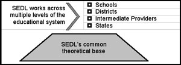

The Role of Scientific Research in SEDL’s Work
Session II Makeup: July 30, 2002
In attendance: Ed Tobia, Como Molina, Rowena Tolentino, Jerry
Elder (recorder), Jeannine Turner, Deborah Donnelly, Suzanne Ashby, Stella
Bell, Chris Ferguson (facilitator)
Question 1: Are the six principles given in the NRC report adequate
for defining scientific research in education? If not, how do you think
they need to be modified?
- The six principles are correlated to all research standards, no matter
the design or type.
- “Education” has to be related to student achievement to be of value
to the field.
- The words and phrasing in these principles are as value laden as
much of what is seen commonly in other educational writing.
- The text speaks of significant questions, yet have the simple questions
been answered?
- It is really more of an issue of how do researchers come to
the significant questions.
- Who is posing it?
- What are the ones that need to be answered?
- Sometimes the question that is asked is keeping researchers from
getting to what is really wanted.
- Questions must be related to relevant theory.
- In general, SEDL is good at articulating the method; we are not as
good at articulating the theory.
Question 2: Given your group's definition, how do you think SEDL should
attend to scientific research, and the quality (or rigor) of it, in our
work? What would we need to do differently in order to act on scientific
research in the manner you recommend?
- As an organization, SEDL should have a general theoretical base.

- Does SEDL have a core theory that drives all of the work?
- Do we want to move away from applied research?
- All SEDL staff need a greater understanding of research—nuts
and bolts and conceptualization.
- The institution needs to identify what is the focus of research for
the whole institution.
- Doing a general exploration type of research before delving into
the larger research projects would be ideal.
- SEDL should also tie more strongly to a theoretical base before
moving research forward.
- There needs to be a better marriage of fieldwork and research.
- There needs to be an effort to break down the silos in projects
and across projects to share not only the work focus but also the
research learnings.
- There needs to be a scaffolded approach to the research.
- How much of our research agenda is impacted by politics?
Question 3: To be a successful RD&D institution, where success is
defined in terms of our ability to build knowledge and bring it to bear
on practice, are there other types of knowledge that we need to pay attention
to beyond that which comes from scientific research? If so what are they,
how well do you think we attend to them, and what would we need to do
in order to better act on them?
- There are many scientific research bases that SEDL is not making
use of:
- Team dynamics
- Relationship building
- Trust building
- Motivation
- Cultural knowledge
- Organizational/systems
- Conceptual knowledge
Resource
Archive: Scientific Research in SEDL's Work